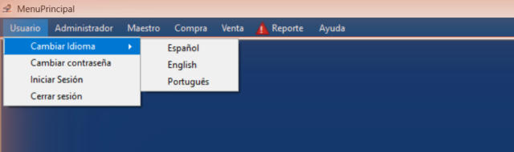

Inicio › Usuario › Cambiar idioma
Cambiar idioma
Cambia al instante el idioma de los menús y de todas las pantallas. El sistema se acuerda de tu elección y la vuelve a usar cada vez que iniciás sesión.
Dónde está: Usuario › Cambiar IdiomaLo usa: Todos los usuariosAtajo: F1
Pasá el mouse por encima de cualquier botón o campo de la pantalla para ver qué hace.

Qué hace cada elemento
- 1Menú UsuarioAcá están las opciones de tu cuenta: idioma, contraseña y sesión.
- 2Cambiar IdiomaAbre la lista de idiomas disponibles.
- 3EspañolPone todo el sistema en español.
- 4EnglishPone todo el sistema en inglés.
- 5PortuguêsPone todo el sistema en portugués.
Cómo hacerlo
- Abrí el menú Usuario.
- Pasá por Cambiar Idioma.
- Elegí Español, English o Português.
- Los menús y las pantallas abiertas cambian en el momento.
Tené en cuenta: Cada idioma se ve siempre con su propio nombre, así lo encontrás aunque el sistema esté en un idioma que no entendés.
Para saber más
Reglas a tener en cuenta 4
- Tu idioma queda guardado en tu usuario: la próxima vez que inicies sesión el sistema lo usa solo.
- Cada cambio de idioma queda registrado en la bitácora de eventos.
- Antes de iniciar sesión, la pantalla de ingreso usa el último idioma con el que se trabajó en esa computadora.
- Esta ayuda está solo en español.
Temas relacionados
SneakRush · Ayuda del sistema · Cambiar idioma. Podés abrir esta ayuda desde cualquier pantalla con la tecla F1.